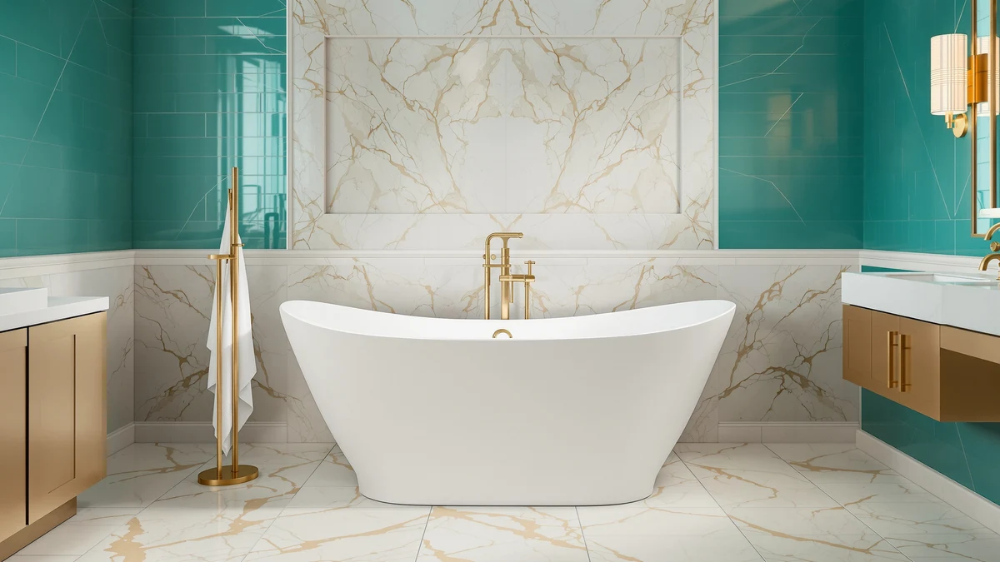

Signature Hardware 312540 Lena Review (2026): Worth It?
Prices and picks verified as of August 2026. Independent, reader-supported reviews.


Quick Answer
The Signature Hardware 312540 Lena is a genuine enameled cast iron clawfoot tub in brushed nickel, and it delivers what that combination promises: a 72 inch soak that holds heat far longer than acrylic, backed by a 25-year warranty and an enamel surface built to last decades. It costs $2,569 plus a separate faucet, and it is heavy enough to matter for upstairs floors, so it fits a statement bathroom with brushed nickel fixtures rather than a default pick.
Our pick: Signature Hardware 312540 Lena 72" — $2,569.00 Check Price on Amazon
Bottom line: our top pick is the Signature Hardware 312540 Lena 72" Cast Iron Soaking Clawfoot at $2.
Things to Know Before You Buy
- The 312540 Lena is enameled cast iron. That is what separates this Signature Hardware 312540 Lena review from a rundown of acrylic tubs: cast iron absorbs heat from the water and radiates it back, so a hot fill stays hot far longer than acrylic.
- Brushed nickel feet set this exact model apart. The 312541 ships with polished brass feet and the 312542 with oil-rubbed bronze, so order the 312540 specifically if brushed nickel is the finish running through the rest of your bathroom.
- It is heavy. Cast iron tubs run several hundred pounds empty and climb close to half a ton full with a bather, so an upstairs install is worth a contractor's sign-off first.
- The faucet is sold separately. Budget for a floor-mounted tub filler at roughly $150 to $400 on top of the $2,569 tub price.
- The enamel is built to outlast the room. It resists scratching and dulling in a way acrylic cannot match over a couple of decades.
This Signature Hardware 312540 Lena review breaks down whether the brushed nickel version of one of Signature Hardware's most popular cast iron clawfoot tubs is worth the $2,569 price tag for your bathroom. The 312540 is a 72 inch soaking tub built for a full-body stretch, and it wears the same enameled cast iron shell as its siblings in the Lena line, paired with brushed nickel feet instead of brass or bronze. If you already know you want a clawfoot centerpiece and brushed nickel is the finish running through your fixtures, this is the version built for you.
Cast iron is a commitment beyond the finish you pick. The 312540 weighs a serious load once it is filled, the faucet costs extra, and $2,569 buys three or four decent acrylic tubs elsewhere. This review lays out where the brushed nickel Lena earns that price, where it adds cost and hassle, and who should buy it instead of admiring it from a browser tab.
Why You Should Trust Us
This Signature Hardware 312540 Lena review is written and maintained by Ilane Tall, who runs a network of bathroom-focused review sites and compares fixtures on the specs that predict satisfaction rather than on marketing copy. We do not run a fake testing lab, and we did not fill a $2,569 cast iron tub in a warehouse to write this. Instead we read the full spec sheet, cross-check dimensions, material, and finish against the listing, and read verified owner reviews for problems that only surface after the plumber leaves. Our Amazon commissions never change the verdict, and we say so plainly when a cheaper tub is the smarter buy.
Our Research Experience
Because a tub like the 312540 Lena is judged on a small set of measurable, physical things, our research for this Signature Hardware 312540 Lena review is built around them. We recorded the interior soaking length, the cast iron construction, the brushed nickel feet and finish, and the pre-drilled overflow, then reasoned through what each detail means once the tub is installed and full. We compared the 312540 directly against its own siblings in the Lena line and against the acrylic and whirlpool tubs shoppers cross-shop at a similar price, paying close attention to the two things cast iron changes most: heat retention during a long soak and the structural demands of the weight. We also read through verified owner feedback on Signature Hardware clawfoot tubs to flag recurring themes, from the separate-faucet surprise to feet-finish mix-ups between the 312540, 312541, and 312542, so nothing about ownership catches you off guard.
Overview & Specs

Signature Hardware 312540 Lena 72"
What we like
- Enameled cast iron holds heat dramatically longer than acrylic
- 72 inch interior gives a true full-body soak for tall bathers
- Brushed nickel feet match a specific, popular fixture finish
- Enamel surface resists scratches and dulling for decades
- Backed by Signature Hardware's 25-year limited warranty
Flaws but not dealbreakers
- Heavy enough that an upstairs floor may need reinforcement
- $2,569 before you buy a faucet
- Floor-mounted tub filler sold separately ($150-$400)
- Easy to mix up with the 312541 and 312542 if you skip the feet finish
- Cold to the touch until the water warms it
| Material | — |
| Size | — |
The case for the 312540 Lena rests on the material and the finish. Enameled cast iron absorbs heat from the water and radiates it back, so a hot fill stays hot through a long soak instead of turning tepid in twenty minutes the way acrylic does. Pair that with a 72 inch interior long enough for a six-footer to stretch out fully, plus the pre-drilled overflow, and you get a tub built for the slow, hot bath that is the entire point of installing a soaker. The brushed nickel feet are the detail that separates this exact model from its siblings, and they are worth checking against your faucet and hardware finish before you order, since Signature Hardware sells the same tub with polished brass or oil-rubbed bronze feet under different model numbers.
The honest cost is physical and financial. Empty, the 312540 already weighs several hundred pounds, and full with a bather it climbs close to half a ton in one spot on the floor, which is fine on a slab but worth a contractor's sign-off upstairs. The $2,569 price does not include a faucet, so budget $150 to $400 for a floor-mounted tub filler on top. None of that is a flaw so much as the terms of owning real cast iron. If you go in expecting them, the 312540 Lena delivers what a Signature Hardware 312540 Lena review should confirm: a cast iron clawfoot soaker built to outlast the bathroom around it.
What We Liked
The heat retention is the headline for the 312540, and it holds up under scrutiny. Cast iron keeps a hot fill hot long after an acrylic tub would have gone lukewarm, which matters if you bathe to unwind rather than to get clean and check a box. For anyone chasing a long soak, that difference alone can justify the step up from acrylic.
The second strength is durability. Enameled cast iron does not craze or cloud the way acrylic gel-coat can over the years, so a 312540 installed today can reasonably still be the best fixture in the room decades out. The brushed nickel feet are a real style choice too, not an afterthought, and they read as intentional once the tub is in place. Signature Hardware backing it with a 25-year limited warranty adds confidence on a purchase this size.
What Could Be Better
The weight is the constraint you cannot design around. Moving the 312540 into place takes more than two people and a casual afternoon, and for a second-floor bathroom you should confirm the floor can take a concentrated half-ton load before you order. Installation is a real project here, not a weekend job.
The price is the other reality. At $2,569 before a separate floor-mounted faucet, the 312540 Lena sits well above most freestanding tubs, and the brushed nickel finish only matters if the rest of your bathroom hardware actually matches it. Order the wrong feet finish by mistake among the 312540, 312541, and 312542, and you are stuck with a several-hundred-pound return.
Who Is It For?
Buy the 312540 Lena if you are building a bathroom around brushed nickel fixtures and want a cast iron clawfoot as the centerpiece. It fits a period home, a primary suite renovation, or any space where you have the ground-floor slab or verified structure to carry it, plus the budget for a proper floor-mounted faucet on top. Tall bathers who want to stretch out fully, and anyone who treats a long hot soak as the whole point of the room, are the right buyers here.
Skip it if you want a tub rather than a statement, or if your fixtures run polished brass or oil-rubbed bronze instead of brushed nickel. For a guest bath, a rental, an upstairs bathroom with questionable joists, or a budget under about $1,500, a good acrylic freestanding tub covers the everyday function for a fraction of the price and weight. Read this Signature Hardware 312540 Lena review as a fit test first: the tub earns its price only for the buyer who checks every box above.
Alternatives to Consider
The 312540 is our pick if brushed nickel is your finish and you want a full-length cast iron clawfoot, but it is not the only reasonable choice. If you would rather match a different metal, want jets and heat instead of a plain soak, or need a shorter tub, these three cover the most common reasons to look elsewhere.

Editor’s Pick
Signature Hardware 312542 Lena 72"
The same enameled cast iron and 72 inch clawfoot soak as the 312540, built with oil-rubbed bronze feet instead of brushed nickel. Pick this one if oil-rubbed bronze is the finish running through your bathroom, since everything else about the tub, including the $2,569 price, is identical.
$2,569.00
Check Price on Amazon
Best Value
WOODBRIDGE 72"×35-3/8" Double Slipper Whirlpool&Air
A 72 inch acrylic whirlpool with air jets and built-in heat for $2,399, a few hundred dollars less than the Lena and far lighter to install. Choose this over the 312540 if you want an active, heated, jetted soak instead of a quiet cast iron one, or if your floor cannot carry a half-ton clawfoot tub.
$2,399.00
Check Price on Amazon
Premium Choice
Signature Hardware 415196 Goodwin 66"
A shorter 66 inch cast iron clawfoot from the same Signature Hardware family, in black with polished brass feet, for $2,319. Worth a look if the 312540's 72 inch length is more than your bathroom needs but you still want real cast iron and a clawfoot silhouette.
$2,319.00
Check Price on AmazonFrequently Asked Questions
Does the Signature Hardware 312540 Lena come with a faucet?
No. Like almost every freestanding tub, the 312540 ships as the tub, feet, and pre-drilled overflow only. You'll need a separate floor-mounted tub filler, which typically runs $150 to $400 depending on finish, so factor that into the $2,569 tub price before you budget the room.
What's the difference between the 312540, 312541, and 312542 Lena?
The tub itself is identical across all three: the same 72 inch enameled cast iron clawfoot shell. The model number tracks the feet finish. The 312540 ships with brushed nickel feet, the 312541 with polished brass, and the 312542 with oil-rubbed bronze. Pick the number that matches the rest of your bathroom hardware.
How much does the 312540 Lena weigh?
Cast iron is heavy. The 312540 weighs several hundred pounds empty, and filled with water and a bather it climbs close to half a ton in one spot on the floor. That is usually fine on a slab or solid ground-floor joists, but an upstairs install is worth a contractor's sign-off first.
Is the Signature Hardware 312540 Lena worth $2,569?
It is if you want a heirloom-quality centerpiece in brushed nickel and you have the floor and budget for it. You are paying for real enameled cast iron, decades of durability, and a clawfoot look that anchors the room. It is overkill for a guest bath or a casual soaker, where a sub-$1,000 acrylic tub does the everyday job for a quarter of the price.
Final Verdict
This Signature Hardware 312540 Lena review comes down to one question: does brushed nickel match your bathroom, and are you ready for a cast iron clawfoot tub. If the answer is yes, the 312540 delivers real heat retention, a 72 inch soak, and Signature Hardware's 25-year warranty behind an enamel finish built to outlast the room. At $2,569 before a separate faucet, and heavy enough to demand a floor that can carry it, this tub only makes sense when the brushed nickel finish and the statement soak are what you are actually buying. If that is your project, the 312540 Lena is an easy recommendation. If it is not, the oil-rubbed bronze 312542, the polished brass 312541, or one of the acrylic alternatives above will get you the same everyday soak for less money and less weight.